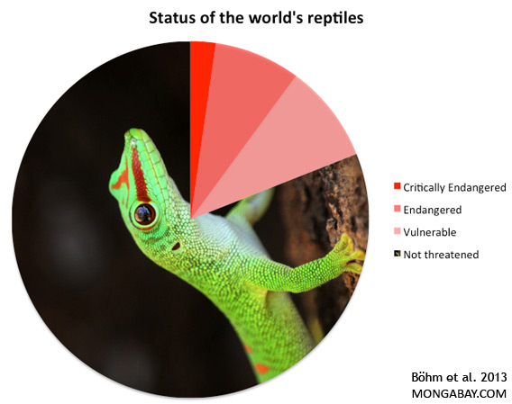

El Día de la Concientización sobre los Reptiles celebra a todas aquellas especies de reptiles como las serpientes, las lagartijas y otros reptiles alrededor del mundo. A continuación, encontrarás muchas razones por las que estos animales necesitan ser protegidos.
Creemos que es un gesto muy agradable para todos los amantes de los animales mostrar aprecio por estas bellezas exóticas y encontrar la mejor manera de celebrar la ocasión.
Una de las cosas que puede hacer es hacer una donación a uno de los muchos programas de conservación de reptiles en su estado o comunidad.
Visite su zoológico local, solo o con sus amigos e hijos, y exhiba cuidadosamente las colecciones de reptiles exóticos que cuidan.
La importancia de la conservación de los reptiles
un estudio liderado por el zoólogo y conservacionista de la institución Nature Serve, Bruce Young titulado A global reptile assessment highlights shared conservation needs of tetrapods En él, el investigador y sus colegas aplicaron los criterios de la Lista Roja de la Unión Internacional para la Conservación de la Naturaleza -UICN- para examinar los riesgos de extinción para los reptiles a nivel mundial. Así, de las 10.196 especies de reptiles evaluadas, los autores encontraron que al menos 1.829 de ellas, aproximadamente el 21%, se encontraba amenazada de extinción en algún grado

¿Qué es el Día de la Concientización sobre los Reptiles?
El Día de la Concientización sobre los Reptiles pretende celebrar la diversidad y dar a conocer la difícil situación que viven estos animales alrededor del mundo.
¿Cuándo se celebra el Día de la Concienciación sobre los Reptiles?
Este día se celebra el 21 de Octubre
¿Cuántas especies de reptiles hay en el mundo?
Existen más de 10,000 especies diferentes de reptiles y constantemente se siguen descubriendo nuevas. 💚🐍
¿Los reptiles son animales vertebrados?
Sí, los reptiles cuentan con una columna vertebral, lo cual los hace vertebrados
¿En qué se diferencian los reptiles de los anfibios?
A pesar de que los reptiles y los anfibios son muy similares, acá podrás encontrar algunas de las diferencias más importantes que tienen. · Los reptiles tienen piel seca mientras que los anfibios usualmente húmedos al tacto · Los huevos que ponen los reptiles tienen cáscara, en cambio los huevos de los anfibios son gelatinosos · Los reptiles mantienen su forma a través de la vida a diferencia de los anfibios que tienen diferentes etapas de transformación en las que pasan de ser crías acuáticas que respiran a través de branquias a convertirse en adultos con branquias o pulmones dependiendo de la especie.
¿Debería liberar al reptil que mantengo como animal de compañía?
No, nunca deberíamos de tener un reptil como un animal de compañía; Sin embargo, dejarlo libre en la naturaleza tampoco es una buena idea ya que hacerlo puede dañar el ecosistema. En caso de que tengas un reptil en casa lo que deberías hacer es aprender lo más que puedas sobre las necesidades de estos animales y cómo puedes hacer para satisfacerlas. Si no puedes proveer las condiciones que necesita busca un centro de rescate cercano de alto bienestar que pueda hacerse cargo y darle los cuidados necesarios.
Di NO a la caza de los reptiles
La caza de reptiles, ya sea por su carne, piel, o como mascotas exóticas, ha sido una práctica arraigada en muchas culturas y comunidades en todo el mundo. Sin embargo, es importante reconocer el impacto negativo que esta actividad puede tener en las poblaciones de reptiles y en los ecosistemas en general. A través de la concientización y la promoción de prácticas sostenibles, podemos contribuir significativamente a la conservación de estas fascinantes criaturas y de los hábitats en los que habitan.
podemos trabajar juntos para proteger a los reptiles y garantizar su supervivencia a largo plazo. Es responsabilidad de todos nosotros actuar en pro de la conservación de estas fascinantes criaturas y del medio ambiente en general.